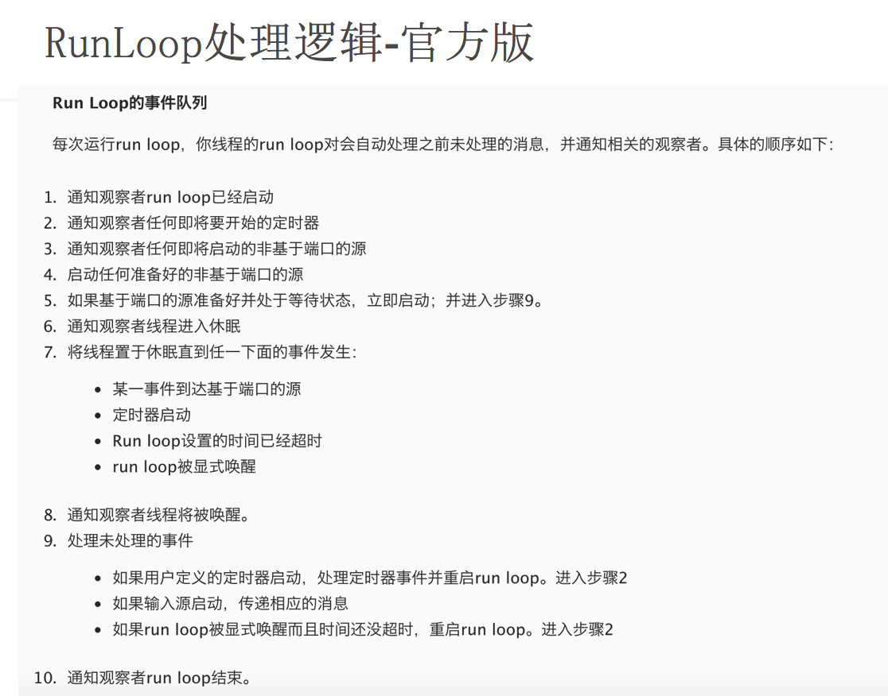
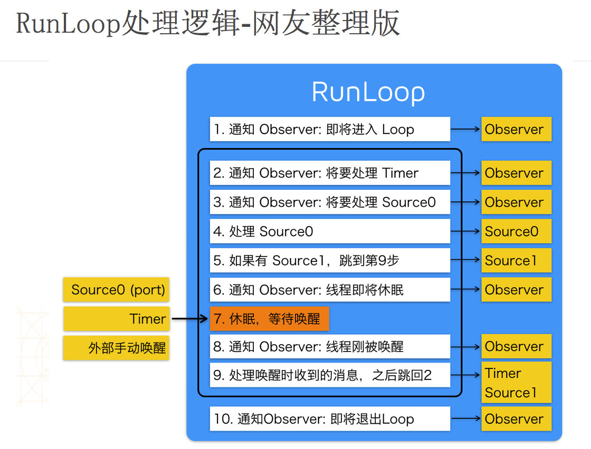

RunLoop 的概念
一般来讲，一个线程一次只能执行一个任务，执行完成后线程就会退出。如果我们需要一个机制，让线程能随时处理事件但并不退出，通常的代码逻辑是这样的：
1 | function loop() { |
这种模型通常被称作 Event Loop。 Event Loop 在很多系统和框架里都有实现，比如 Node.js 的事件处理，比如 Windows 程序的消息循环，再比如 OSX/iOS 里的 RunLoop。实现这种模型的关键点在于：如何管理事件/消息，如何让线程在没有处理消息时休眠以避免资源占用、在有消息到来时立刻被唤醒。
RunLoop在iOS中的初体验
UIApplicationMain函数内部启动了RunLoop，所以UIApplicationMain函数一直没有返回，保持程序持续运行。这个默认启动的RunLoop与主线程相关联
1 | int main(int argc, char * argv[]){ |
RunLoop对象
两套API
CGRunLoop（Core Foundation）
它提供了纯 C 函数的 API，所有这些 API 都是线程安全的
NSRunLoop（基于CGRunLoop的封装）
提供了面向对象的 API，但是这些 API 不是线程安全的
获取RunLoop对象
- NSRunLoop
1 | // 当前线程RunLoop对象 |
- CGRunLoop
1 | // 当前线程RunLoop对象 |
RunLoop与线程
- 每条线程都对应一个唯一的RunLoop对象
- 主线程的RunLoop自动创建，子线程的RunLoop需主动创建
- RunLoop在第一次获取时创建，在线程结束时销毁
RunLoop相关类
CFRunLoopRef
CFRunLoopModeRef
CFRunLoopModeRef代表RunLoop的运行模式
一个 RunLoop 包含若干个 Mode，每个Mode又包含若干个Source/Timer/Observer
每次RunLoop启动时，只能指定其中一个 Mode，这个Mode被称作 CurrentMode
如果需要切换Mode，只能退出Loop，再重新指定一个Mode进入。这样做主要是为了分隔开不同组的Source/Timer/Observer，让其互不影响
kCFRunLoopDefaultMode
App的默认Mode，通常主线程是在这个Mode下运行UITrackingRunLoopMode
界面跟踪 Mode，用于 ScrollView 追踪触摸滑动，保证界面滑动时不受其他 Mode 影响UIInitializationRunLoopMode
在刚启动 App 时第进入的第一个 Mode，启动完成后就不再使用GSEventReceiveRunLoopMode
接受系统事件的内部 Mode，通常用不到kCFRunLoopCommonModes
这是一个占位用的Mode，不是一种真正的Mode
CFRunLoopSourceRef
CFRunLoopSourceRef是事件源（输入源）
- Source0：非基于Port的
- Source1：基于Port的
CFRunloopTimerRef
CFRunLoopTimerRef是基于时间的触发器
其实就是NSTimer
CFRunLoopObserverRef
CFRunLoopObserverRef是观察者，能够监听RunLoop的状态改变
RunLoop处理逻辑


RunLoop应用
RunLoopTimer,RunLoopMode的使用
RunLoopTimer
1 | // schedule方法创建的NSTimer，默认添加到RunLoop的加入default模式 |
RunLoopMode
1 | // 定时器只能运行在NSDefaultRunLoopMode下，一旦RunLoop进入其他模式，将停止工作 |
应用场景：如果在你拖拽scrollView时，希望某个操作不要执行，那么就不要再scrollView的代理方法中判断，而是直接将操作添加到defaultMode中。
显示图片(PerformSelector)
场景：当一个线程在下载图片后，想显示在imageview上，但是用户在拖动view，如果此时依然要显示，会造成卡顿的现象
解决：将显示放在default模式下，也就是说在拖动view时，控制器是处于UITraking模式的，那么显示就将无效，直到停止拖动。
1 | // 在显示imageView图片时设置只在NSDefaultRunLoopMode模式下显示图片 |
常驻线程
提示：
- 线程执行完任务之后处于消亡状态，不能再次start，即使有一个强指针引用着。runloop一直跑圈的前提是里面有东西 (source（port），timer)
自动释放池 - RunLoop退出条件：
- 线程被强制结束
- 里面的Timer，source都清空了,observer有无是没影响的。因为runloop每次跑圈都会检测里面是否有东西
下面代码想实现的效果是：创建一个线程，为了不让线程执行完任务马上销毁，于是使用RunLoop让线程常驻，最后通过让线程再次执行任务来测试它是否被销毁
1 | - (void)viewDidLoad { |
自动释放池
- 在runloop休眠之前释放
- 在唤醒后，做事前，又重新创建一个释放池
所以我们在启动runloop前，要创建一个自动释放池
1 | - (void)execute |